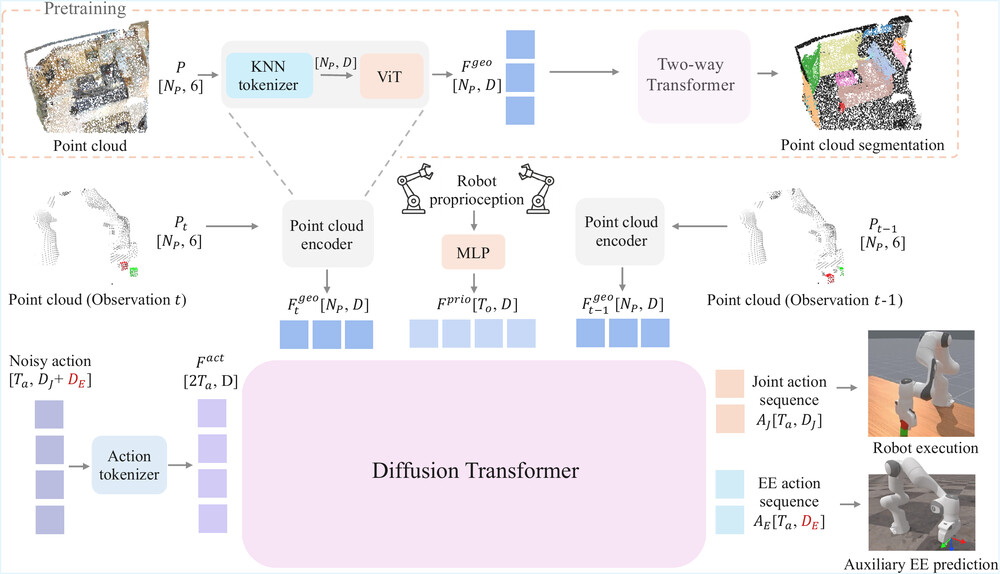
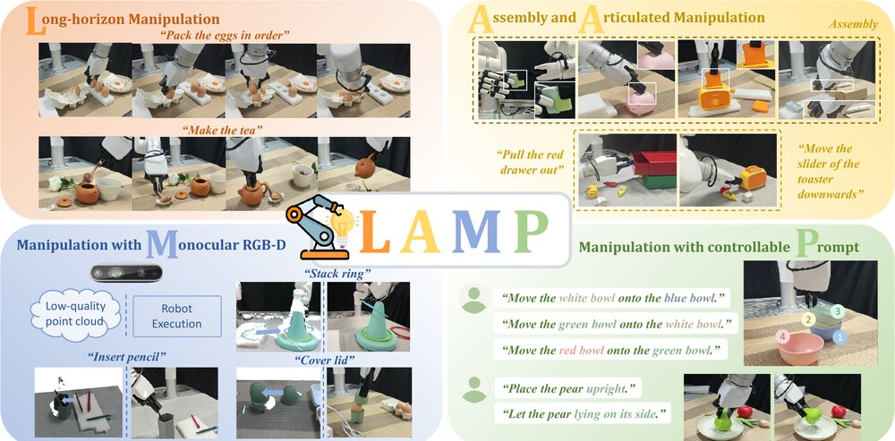
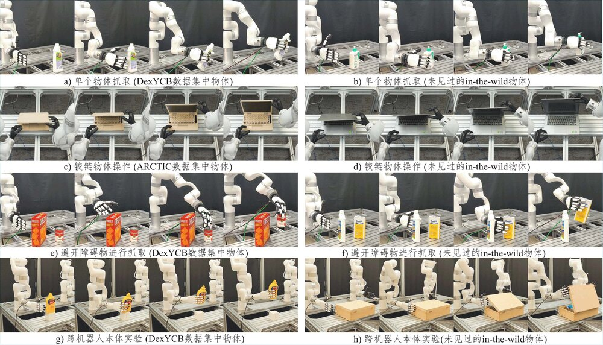
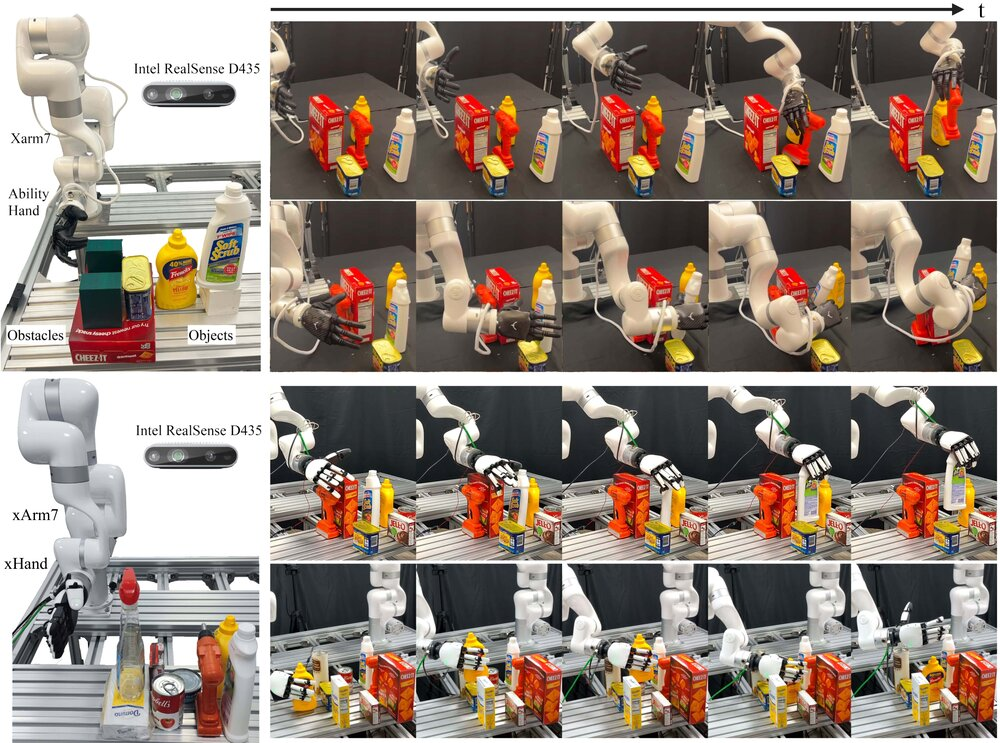
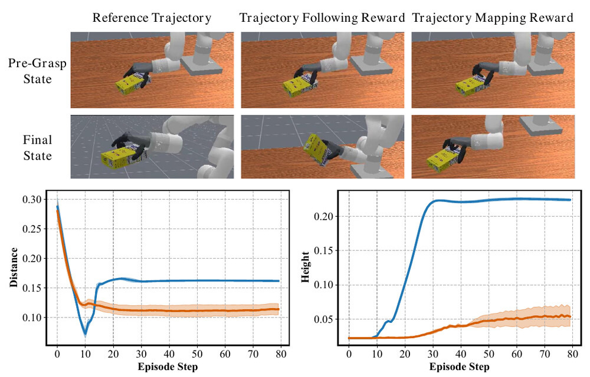
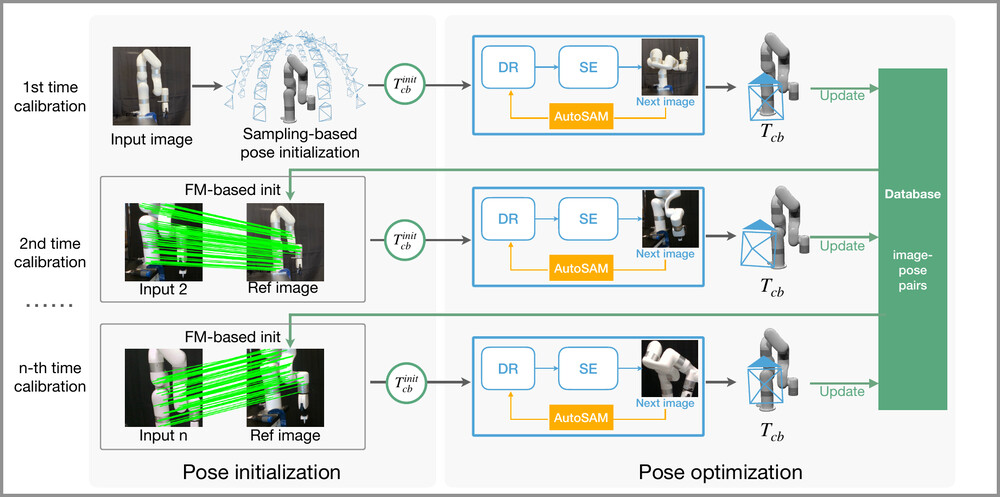
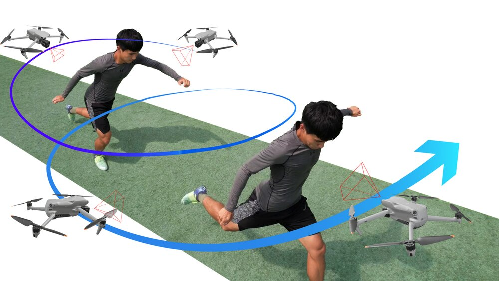

Zhengdong Hong洪郑栋
/ I work on full-stack robotics — from hardware to policy.
Final-year Ph.D. student, State Key Lab of CAD&CG, Zhejiang University (expected 2026)
Research Scientist Intern, Amazon Frontier AI & Robotics · San Francisco
I am a final-year Ph.D. student in Computer Science at the State Key Laboratory of CAD&CG, Zhejiang University, advised by Prof. Guofeng Zhang. I am currently a Research Scientist Intern at Amazon Frontier AI & Robotics in San Francisco. In 2023–2024, I worked in Prof. Hao Su's lab at UC San Diego.
My research sits at the intersection of robot manipulation learning and 3D vision. My early years in 3D computer vision gave me a deep understanding of the 3D world and its representations, and that understanding now drives my work on strengthening a robot's ability to perceive, understand, and interact with 3D space — through geometry, object-centric motion priors, and particle-based world models learned from humans. I was fortunate to work closely with Yuzhe Qin and Jiayuan Gu on reinforcement learning and sim-to-real for dexterous manipulation.
I work full-stack, in the spirit of hardware–algorithm co-design: starting from what a robot task fundamentally demands, I think about how to collect — and correctly use — better data for improving robot policies. That system capability stems from my hardware roots: a B.Sc. in Electrical Engineering (rank 1/48) and the national championship of the Texas Instruments (TI) Cup electronic design competition (1/1847), with foundations running down to analog circuits, power electronics, motors, and embedded systems. I have built complete robot systems end-to-end — mechanics, power, PCBs, firmware, drivers, calibration, teleoperation, and data-collection pipelines — so a brand-new robot can be learning-ready in days, and when a policy misbehaves in the real world, I can debug the whole stack.
Robotics is where everything I love — algorithms, electrons, and mechanisms — has to work together.
Hardware bugs are not as visible as software's. Signal is the clue. — from my hardware debugging field notes
01Experience & Education
Awards
- ★TI Cup (highest award) — Championship, 8th Texas Instruments (TI) National Undergraduate Electronic Design Competition · rank 1/18472020
- ★First Prize — 26th Zhejiang University "TP-LINK Cup" Undergraduate Electronic Design Competition2020
02News
- 2026.05Joined Amazon Frontier AI & Robotics in San Francisco as a Research Scientist Intern.
- 2026.04R3D and LAMP released on arXiv.
- 2026.01Presented Object-Centric Motion Priors as an Oral at AAAI 2026.
- 2025.10AdaDexGrasp presented as an Oral at IROS 2025, Hangzhou.
- 2025.06Particle-based world model paper: Oral at the RSS 2025 Dexterous Manipulation workshop.
- 2024.10EasyHeC++ presented as an Oral at IROS 2024.
- 2024.07Paper on free-viewpoint video of outdoor sports accepted to ECCV 2024.
03Publications
* equal contribution

R3D: Revisiting 3D Policy Learning
TL;DR
Why does 3D policy learning fail to scale? We trace it to two root causes — BatchNorm and missing 3D data augmentation — and fix both with a scalable transformer 3D encoder plus a diffusion-transformer action decoder, outperforming SOTA across manipulation benchmarks.

LAMP: Lift Image-Editing as General 3D Priors for Open-world Manipulation
TL;DR
Image-editing models carry implicit spatial knowledge. LAMP lifts these 2D editing cues into 3D inter-object transformations, yielding general 3D priors that enable fine-grained, open-world robotic manipulation.

Learning Object-Centric Motion Priors from Human for Robotic Dexterous Manipulation
TL;DR
Learns object-centric motion priors from human hand-object interaction data by predicting future hand-object states; the priors serve as reward signals for RL — removing manual task-specific reward engineering and transferring across different robot hands, in sim and real.

Learning Particle-based World Model from Human for Dexterous Manipulation
TL;DR
First to learn a particle-based 3D world model from human hand-object interaction; MPC generates high-level trajectories that guide RL in simulation for sample-efficient, sim-to-real-transferable dexterous manipulation.

Learning Adaptive Dexterous Grasping from Single Demonstrations
TL;DR
AdaDexGrasp learns a library of dexterous grasping skills from a single human demonstration each — trajectory-following RL rewards plus a pose curriculum — and a VLM selects the right skill from user instructions at deployment.

EasyHeC++: Fully Automatic Hand-Eye Calibration with Pretrained Image Models
TL;DR
Marker-free, training-free, fully automatic hand-eye calibration for any robot arm: pretrained-image-model feature matching initializes the camera pose, and differentiable rendering refines it.

Free-Viewpoint Video of Outdoor Sports Using a Flying Camera
TL;DR
A drone with a single RGB camera reconstructs the 4D dynamic athlete together with the unbounded 360° scene, enabling free-viewpoint replay of real outdoor sports — plus the new AerialRecon dataset. Conceived, built, and written solo.
04Robot Systems
I don't just use robots — I build infrastructure and deploy them. Most recently at Amazon FAR I took a wheeled humanoid from bring-up to an end-to-end autonomous system; before that, at Su Lab (UCSD), I designed and assembled the lab's manipulation platforms from bare aluminum up: mechanics, power, electronics, firmware, drivers, calibration, teleoperation, and the data-collection stack. Photos on the left rail ◀
2026 · amazon frontier ai & robotics
Autonomous Mobile Manipulation on Vega, a Wheeled Humanoid
At Amazon FAR I built and deployed a complete open-world agentic mobile-manipulation stack on the Dexmate Vega Pro: LiDAR–camera fused mapping with open-vocabulary object-goal navigation, whole-body IK and compliance control, and autonomous grasping — every motion verified collision-free in simulation before it touches the robot, and the full pipeline running onboard. From bare-metal bring-up (grippers, wrist camera, power & comms) to the end-to-end system.

- base · arm · dexterous hand
- onboard 24 V power system
- aluminum cell + camera array
- teleop + data collection ready
- bimanual manipulation
- multi-view cameras, ArUco-boarded
- Robot infrastructure, per model. For every robot I work with, I write the full stack it needs for learning research: drivers, calibration, teleoperation, data collection, and deployment.
- Lab hardware lead (Su Lab, since Nov 2023). Fixed two broken xArm control boxes and a broken xArm7; corrected a factory misalignment with a steel ruler and patience; ran hardware training and the rental/maintenance workflow.
- Power & signal debugging. Worked out the Ability Hand power budget (7.4 V/14 A hand vs. a shared 24 V/16.5 A supply — clenching while lifting browns out), and traced its RS-485 dropouts to interference from the external supply. Fixed in the analog domain.
- Wrote the manuals. Authored the lab's Electronic Fabrication User Guidance & debugging field notes used to onboard new members.
fleet — hardware I've built infrastructure for
Full build log with photos: robot systems deck ↗
05Hardware
Before robots, there was electrical design. Four years of the EE Excellence Program — six days a week in the hardware lab — left me with an analog-deep understanding of circuits, power, and motors that I now aim at sim-to-real. Photos on the right rail ▶
highest award · national championship
TI Cup — 8th Texas Instruments National Undergraduate Electronic Design Competition
We designed, built, and validated an Amplifier Nonlinear Harmonic Distortion Analysis System in 4 days and 3 nights — and took the TI Cup, the competition's single highest award. I led the team through the full design and evaluation.
8×5 cm custom PCB, DSP-controlled (C2000). Schematic → layout → bring-up → scope validation, all mine.
PSpice-simulated analog control, hand-soldered build. First Prize, 26th ZJU "TP-LINK Cup" EDC.
The TI Cup build: precision analog front end + DSP analysis for amplifier nonlinearity measurement.
Visual defect inspection (RPi + OV5647), IR temperature and ToF thickness sensing, STM32 control, PWM belt drive, electromagnetic pick-and-place.
FAST + LK optical flow on CUDA, running on a Jetson TX2 for drone visual-inertial odometry.
Dynamic on-resistance measurement of vertical GaN power devices, with Prof. Shu Yang — trapped-charge and p-GaN hole-injection mechanisms.
Digital system design from scratch on an Intel MAX10 (MAX10M08SCM153C8G).
DC-AC switching design and closed-loop anti-harmonic control, designed and simulated in MATLAB/Simulink (THD 3.34%).
99% of hardware debugging is problem positioning — and the Replacement Method is always the fastest path. This is not metaphysics: every "sometimes it works" has a reason. — field notes #1 & #4
Deep dives: hardware project deck ↗ · debugging field notes & fabrication guide ↗
06Contact
The fastest way to reach me is email:
hzddltql@gmail.com
Also on Google Scholar
and GitHub.